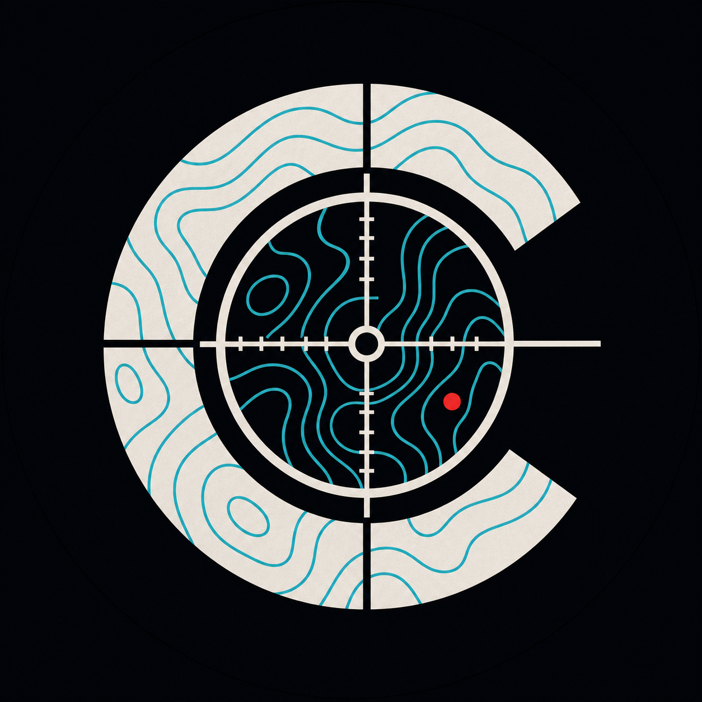

Production with human editorial judgment
Can an agentic harness do repeatable production while people add the taste, context, skepticism, common sense, and moral judgment that make factual media useful?
Crime Cartography
Crime Cartography is the first case in a larger public experiment: an agentic harness produces at scale, a human collective adds human judgment, and together we develop useful factual media and fairer rules for sharing created value.
Project participation has its own editorial workflow. Project emails and editorial contributions are tracked separately from ordinary YouTube subscriptions, likes, comments, views, and shares.

Evidence first.Crime Cartography is a factual-media project built around a collective harness. The agentic production system can gather data, generate repeatable visualizations, and prepare draft media at a scale that would be difficult to sustain manually. A distributed human editorial layer then contributes the context, skepticism, taste, ethical judgment, corrections, and release accountability that make those drafts worth publishing.
The project starts with crime-data visualization because it provides a concrete domain where evidence, framing, comparability, privacy, and public interpretation all matter. The goal is to turn an engaging visual format into something that leaves viewers with defensible knowledge about time, place, and change rather than only producing attention.
Crime Cartography is also an experiment in collective participation. As the contributor group grows, most people interact through focused project emails and lightweight review rather than operating the harness directly. Their contributions can be attributed, compared, and eventually connected to governance and value-sharing rules that the project develops in public.
Crime-data visualization is the first proving ground for the model. This channel stays focused on crime while its formats grow; separate future projects can reuse what works in other factual domains.
Can an agentic harness do repeatable production while people add the taste, context, skepticism, common sense, and moral judgment that make factual media useful?
Can an already engaging format help large audiences remember defensible facts about time, place, and change—first here in crime, then through separate factual projects?
Can contributors help shape the rules and outputs, receive traceable credit, and eventually share value through a legally and operationally sound model?
A Boston first pass can accurately show reported index crime falling 71% from its 1989 peak to 2015. The human layer turns that valid output into useful public understanding.
Correct headline. Little help interpreting what the line can—and cannot—mean.
The viewer gets a shape, a limit, and three ideas worth remembering.
Claims recompute from release data and material source limits remain visible.
The viewer leaves with a coherent model of time, place, and meaning.
The framing minimizes victim exposure, neighborhood stigma, and false precision.
Choose the part you understand best: the content standard, the human editorial work, or the rules for power and value.
The project page and repository context make the current design inspectable; the comment thread below keeps public discussion attached to the project.
Define what a viewer should understand and remember—and which human checks keep the explanation rigorous and meaningful.
Discuss the release standardDefine specific, useful human judgment—and how to record credit, compare feedback, and handle disagreement fairly.
Discuss the editorial layerDefine manager authority, contributor voice, costs, reserves, succession, and future surplus rules.
Discuss governance and valueRelease the introduction and human-approve the first dedicated remakes.
Report what feedback changed, hold a public Q&A, and test the email workflow safely.
Scale formats, editorial participation, governance, and value-sharing as the operating systems mature.
People who add revision-specific taste, context, skepticism, common sense, and release accountability.
A possible future gig-economy role around bounded agentic-production artifacts.
What may remain after verified costs, manager cap, reserve, tax, and accounting obligations.
Public review and project emails are the current participation paths. A future pre-publication editorial cohort can build on those systems as the collective grows.
Use the comment thread on this page to challenge a definition, milestone, editorial standard, or technical design.
Open project commentsReceive updates and future invitations for focused project participation.
Open the email formA capped cohort can eventually review pre-publication units through a more structured contribution system.
Help shape the model